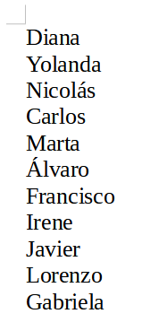
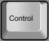
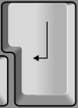
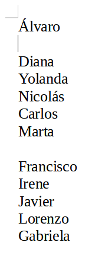
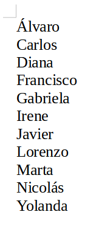

4. Cortar y pegar¶
En este ejercicio utilizaremos las herramientas de cortar y pegar texto para mover líneas de texto a otra posición y así ordenar alfabéticamente una lista de nombres.
Primero descargamos y abrimos con LibreOffice Writer el documento de ejemplo.
Al abrir el archivo anterior nos encontraremos con el siguiente listado de nombres propios desordenados.

Ahora vamos a ordenar alfabéticamente todos los nombres de la lista cortando cada uno de los nombres en orden alfabético y pegándolos al inicio de la lista.
Empezamos por seleccionar el nombre Álvaro y lo cortamos manteniendo pulsada la tecla control

y pulsando a continuación la tecla XTambién podemos seleccionar el nombre y pulsar el botón cortar en la barra de herramientas.
Otra forma de conseguir cortar es seleccionar el nombre y pinchar en el menú
Editar... CortarAhora colocamos el cursor al comienzo de la lista creamos una nueva línea presionando la tecla Return y pegamos el nombre que acabamos de cortar.
Para pegar el texto debemos mantener pulsada la tecla control y pulsar a continuación la tecla V .
También podemos pegar la palabra pinchando en el botón pegar
Otra forma de pegar el nombre es pinchar en el menú
Editar... PegarDebemos pulsar la tecla Return

para separar las líneas de texto y crear una nueva línea.El resultado será el siguiente.

Si en algún momento nos equivocamos y queremos deshacer alguna acción que hemos hecho mal se puede conseguir con el botón de la barra de herramientas.
Para volver atrás también se puede mantener presionada la tecla control y pulsar la tecla Z .
Para volver a rehacer la acción podemos pulsar el botón de la barra de herramientas.
También podemos rehacer la acción manteniendo pulsada la tecla control y pulsando la tecla Y .
Continúa cortando y pegando nombres hasta que la lista esté ordenada alfabéticamente.
